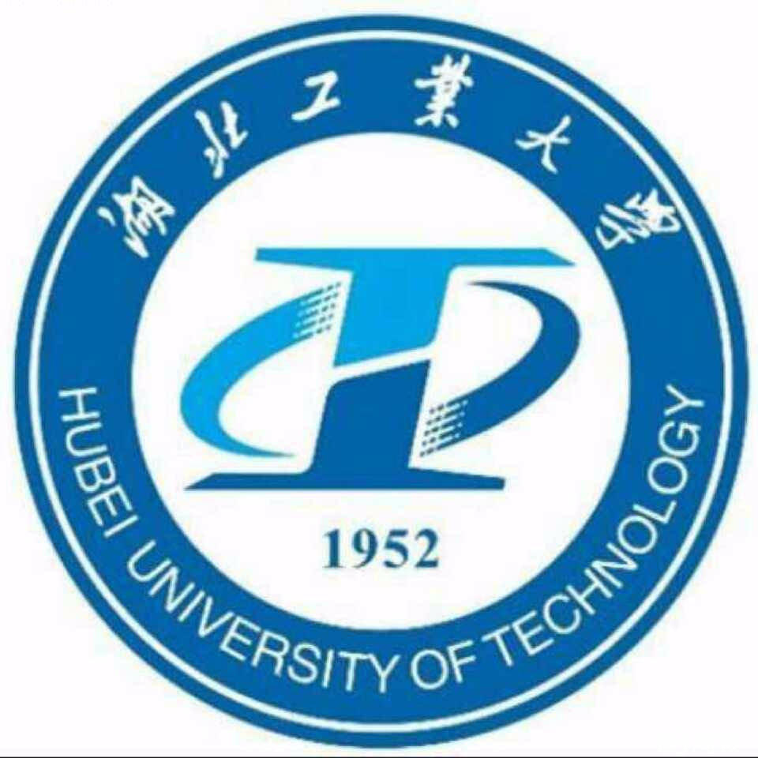

李昕刚(Xingang Li)
关于我
我目前在湖北工业大学攻读硕士学位，师从冯维副教授。
本人已于2021年6月从湖北工业大学 机械工程学院获得学士学位，专业排名（9/193）。
于此同时, 我于2019年9月至2021年6月在 中南民族大学 法学院辅修第二专业获得了学士学位。
我的研究兴趣主要包括: 计算成像与光学三维测量、深度学习、机器人视觉伺服技术 等 。
教育经历
|  | |
本科 湖北工业大学（2017.9~2021.6）
院系专业：机械工程学院，机械设计制造及其自动化 专业排名：9/193 [成绩单] 奖学金：
校优秀毕业生奖学金（2021.6）
国家励志奖学金（2019.9）（2020.9），
校一等奖学金（2019.9）（2020.9），
校二等奖学金（2018.9）
荣誉称号：军运会优秀志愿者（2019.12），湖北工业大学十佳雷锋志愿者（2019.12），校百佳大学生（2019.9），校优秀青年马克思主义学员（2019.6），
优秀共青团员（2019.5），优秀社会实践个人（2019.9）（2018.9） |
|
学术论文
发明专利
其他项目
Page generated 2022-08-15, by Xingang Li